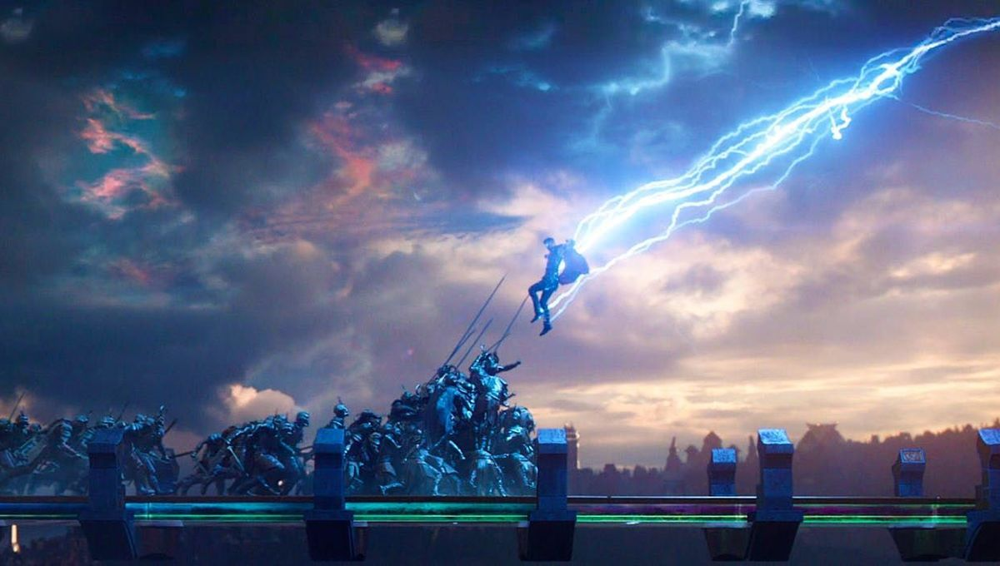

THOR

Thor Odinson is the God of Thunder, the former king of Asgard and New Asgard, and a founding member of the Avengers.
Thor Odinson wields the power of the ancient Asgardians to fight evil throughout the Nine Realms and beyond.
Thor’s mighty hammer Mjolnir has immense destructive capabilities and can be summoned to Thor’s hand whenever the god of thunder wishes it.
Start Quiz
Solutions
Next Quiz onCaptain America